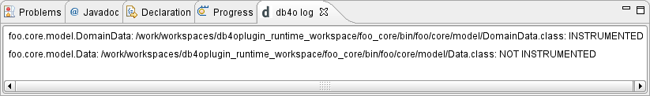

|
|
To verify your configuration settings, a simplistic log view is provided that captures all instrumentation events. It is available in the "db4o" category in the view selection dialog.
The log content will be reset whenever a (incremental or full) build starts, and it will list all changed class files the builder gets to see, along with the instrumentation status.